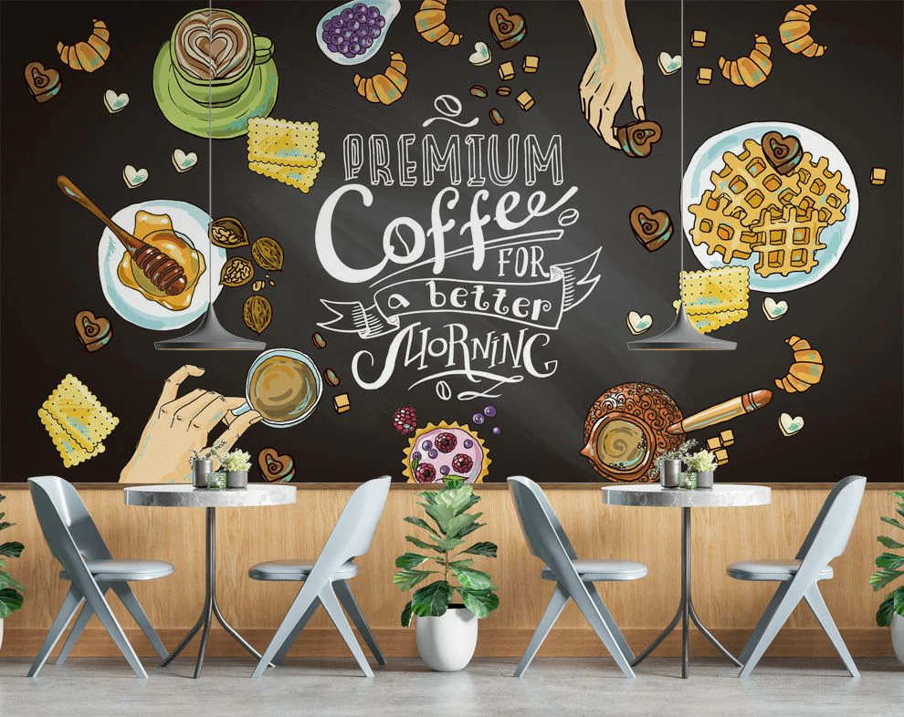

Pastries
Viennoiserie, tarts, danishes, and baked treats presented in a clean, appetizing layout.
Cafe & Bakery Template
A polished cafe and bakery website template built for neighborhood brands, boutique coffee shops, and food businesses that want a strong, welcoming online presence.

Flaky layers, toasted almond glaze, and morning-roasted espresso on the side.
Fresh Daily
This section is ideal for telling the story behind your ingredients, baking process, seasonal menu, or cafe philosophy.
Atmosphere
Use this area for interior highlights, seating style, and cafe mood.
Feature best-sellers, display moments, or signature in-store experiences.
Promote workshops, live music, or neighborhood gatherings with clean CTA support.
"This template already feels like a premium cafe brand. It is warm, editorial, and ready for real customers."
Visit or Order
This section is ready for pre-orders, reservations, catering requests, or store visit details without changing the original website platform.